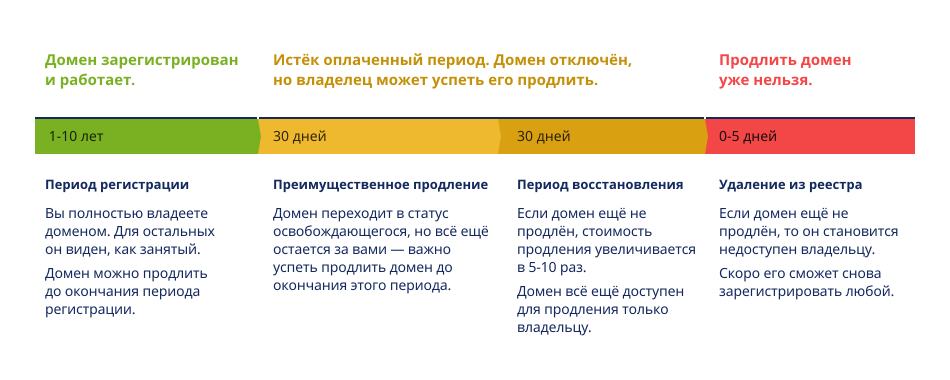

Внимание! При работе с доменным именем следует понимать, что регистрируя доменное имя, вы покупаете не сам домен, а всего лишь право владеть и управлять им в течение определённого времени. Необходимо вовремя продлевать регистрацию домена, и тогда он может оставаться с вами долгие годы. Но при просрочке оплаты есть риск потерять домен. В небольшой период перед удалением у вас будет шанс вернуть домен — на прежних условиях или по специальной цене, но доводить до такой ситуации не следует.
Цикл регистрации и владения доменом выглядит следующим образом:

Статус в Whois: Available
Как только вы придумали доменное имя, проверьте, свободно ли оно. Если интересующий вас домен никем не занят, вы имеете возможность зарегистрировать его на себя. Получить более подробную информацию о выбранном домене, например, проверить его статус, узнать дату регистрации и возраст, можно через сервис Whois.
Напомним: вы не покупаете домен на всю жизнь, а берёте его в аренду. Минимум — на один год. Максимальный срок аренды зависит от зоны, в которой ваш домен зарегистрирован.
Например, в зонах .RU, .РФ, .SU срок жизни домена фиксированный — один год. Чтобы пользоваться одним доменом долгое время, вам нужно каждый год продлевать его.
Некоторые домены можно сразу регистрировать на срок до 10 лет:
Вы можете зарегистрировать домен в одной из этих зон и на меньший срок: например, на 2 или 3 года.
Узнать, на какой срок регистрируется и продлевается домен в определённой зоне, вы можете в момент заказа домена на сайте регистратора. Также эту информацию можно будет найти в регламенте регистрации домена — тоже на сайте регистратора.
Статус в Whois: Registered
Период длится: 1-10 лет
После регистрации домен становится вашим на тот срок, который вы оплатили. Чтобы домен гарантированно остался с вами и дальше, вы можете продлить его аренду заранее.
Например, в зонах .RU, .РФ, .SU можно продлить домен за 60 дней до окончания регистрации. Точную информацию о своём домене вы можете узнать в сервисе Whois и в разделе «Для клиентов».
RU-CENTER заранее напоминает своим клиентам о возможности продлить домен. Мы начинаем присылать уведомления на email за 2 месяца до окончания срока регистрации и продолжаем напоминать об этом вплоть до даты удаления домена.
Статус в Whois: Expired
Период длится: 30 дней.
Если срок аренды вашего домена закончился, а вы не успели его продлить, начинается третий этап его жизни, который длится чаще всего 30 дней в зависимости от выбранной доменной зоны — период преимущественного продления.
При наступлении этого периода домен снимается с делегирования (начинает смотреть на служебные DNS регистратора), поэтому сайт и почта перестают работать.
Отметим, что в этот период домены .RU, .SU, .РФ и домены третьего уровня попадают в списки освобождающихся, и другие пользователи уже могут делать ставки на них на аукционе доменов (например, такой сервис предоставляет nic.ru). При этом вы всё ещё можете продлить свой домен. Но если не уложитесь в сроки, по окончании преимущественного периода регистрации домен удалится и его сможет зарегистрировать любой желающий.
Статус в Whois:
Redemption Period (для доменов .NET, .COM, .NAME),
Pending Delete Restorable (для доменов .INFO, .ORG)
Период длится: 30 дней
Этот этап есть только у доменов в международных зонах. Даже когда домен уже удалён из личного кабинета пользователя и из базы регистратора (но не из реестра!), его всё ещё можно восстановить — за дополнительную плату. Если вы не успели продлить домен вовремя или решили не продлевать его, но затем передумали, напишите в службу поддержки вашего регистратора.
Отметим, что стоимость продления на этом этапе, как правило, в несколько раз больше начальной цены домена — такие правила устанавливают реестры доменных зон. Поэтому о продлении выгоднее задуматься на втором этапе.
Статус в Whois: Pending Delete
Для доменов в зонах в зонах .RU, .РФ, .SU этот этап четвёртый, для международных доменов — пятый. Домен автоматически удаляется из реестра, вернуть себе его уже нельзя.
Период длится: 1-5 дней для международных зон
Домены в зонах .RU, .SU, .РФ удаляют на следующий день после того, как закончится преимущественный период продления:
1. дата удаления публикуется в Whois-сервисе, в поле «free-date»;
2. если дата free-date попадает на выходной, праздничный или первый рабочий день, то удаление домена переносят на следующий рабочий день.
Напомним: пока освобождающийся домен не попал в списки на удаление, вы можете подать заявку на его регистрацию и попытаться вернуть себе. Однако на этом этапе у вас уже не будет преимуществ перед другими желающими арендовать домен и, возможно, вас опередят.
Статус в Whois: Available
Можно попытаться зарегистрировать этот же домен снова уже после его удаления. Но шансы, что вы успеете зарегистрировать тот же домен, особенно невысоки, если речь идёт о коротком и звучном имени в популярной доменной зоне. Раньше вас его могут арендовать доменные инвесторы — люди, которые регистрируют домены, чтобы затем перепродать их по более высокой цене. Они заранее отслеживают статусы таких доменов и регистрируют их сразу же, как только они освобождаются. Возможно, вы сможете выкупить у них свой домен, но уже по более высокой стоимости — как правило, ещё выше, чем в период восстановления.
С этого момента у домена начнётся «новая жизнь», и цикл повторится.
Теперь, когда вы знаете о главных этапах в жизни домена, вам будет проще следить за сроками. RU-CENTER даёт своим клиентам массу возможностей не забыть о своевременном продлении домена и не потерять его. Главное — следить за актуальностью электронной почты, чтобы получать письма с напоминаниями вовремя и на правильный адрес.